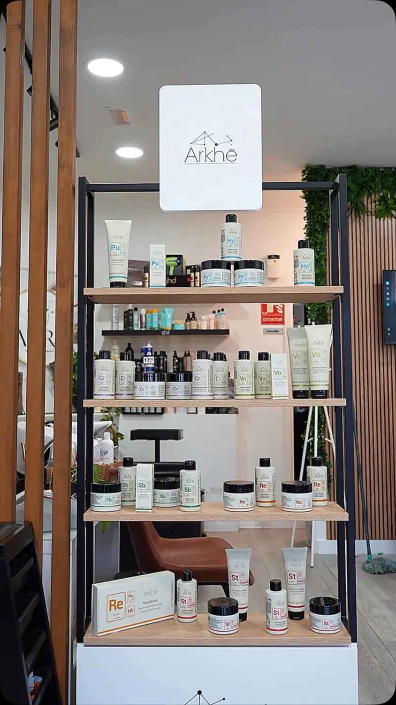
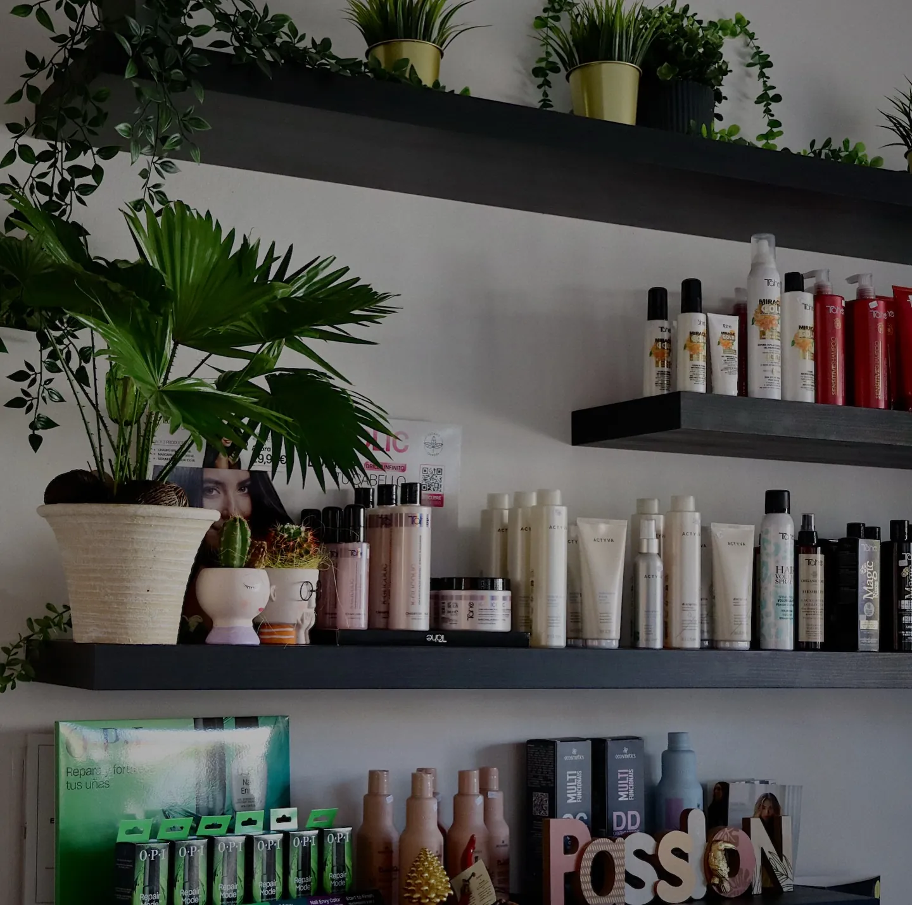

Escuchamos primero
Tu pelo no es uno más: empezamos por escucharte y mirar cómo está tu cabello.

Peluquería + estética unisex · El Sauzal, Tenerife
Tu pelo. Tu piel. Tu forma de ser. Un cuidado que empieza por escucharte y termina haciéndote sentir muy tú.
4,832 opiniones en Google

Nuestra forma de mirar
Y eso es lo que queremos cuidar. Tu gesto, tu textura, tu manera de llevar el pelo. En AURA unimos técnica, productos profesionales y una atención que se toma su tiempo.


«Tu pelo no es uno más.»
Por qué AURA
Cuatro ideas que guían cada cita.
Tu pelo no es uno más: empezamos por escucharte y mirar cómo está tu cabello.
Líneas como Arkhē, Olaplex u OPI, explicadas con transparencia.
Salón unisex, amigable con la comunidad LGBTQ+ y espacio seguro para personas trans, según su ficha en Google.
Te orientamos para llevar la rutina a casa, sin pasos de más.
Elige tu próximo ritual
El cuidado cambia contigo. Explora tu lado AURA.

Un corte que te representa. Un color que ilumina. Una melena que apetece tocar. Empezamos escuchándote y…

Profundidad, reflejos y brillo con una elección de color personalizada. Trabajamos opciones sin amoniaco y…

Rubios que se ven cuidados, reflejos con intención y un tono que acompaña tu piel. Escuchamos lo que buscas y…

Para quienes buscan una melena más manejable y un acabado pulido. Antes de elegir un tratamiento de keratina,…

Manos cuidadas, una piel atendida y pequeños rituales que te hacen sentir bien. En AURA reunimos estética,…

Peinados con movimiento, recogidos con intención y maquillaje que acompaña tu belleza. Preparamos contigo ese…


El cambio, a tu ritmo
Desliza para comparar trabajos reales publicados por el salón. Cada cabello parte de un punto distinto y por eso cada propuesta se valora de forma personal.
De ondas a un liso largo y brillante
Fotografías reales de AURA con ángulos e iluminación distintos. Los resultados dependen de cada cabello.
Un espacio con raíces
Listones de nogal, plantas, luz cálida y un letrero que te da la bienvenida. Queremos que tu visita tenga algo de pausa y mucho de cuidado personal.





Color con intención
Un reflejo que ilumina tu rostro. Un tono con el que te reconoces. Elegimos el color después de conocer tu cabello, tu historia y lo que buscas.


Novias + invitadas
Que el peinado acompañe tu sonrisa. Que el maquillaje siga hablando de ti. Preparamos los detalles, con prueba y con tiempo, para que tú te dediques a vivirlos.
Marcas con criterio
Pregunta por la fórmula concreta: composición y propiedades varían entre productos.


Las manos detrás de AURA
Anabel y sus compañeras comparten un compromiso: que cada persona se sienta acompañada desde la primera conversación. Más de veinte años de oficio y la misma ilusión que el primer día.
«Ya van 2 años de cumplir un sueño.»
— Del Instagram de AURA
Tu primera visita
Sin sorpresas: sabrás qué pasa en cada momento.
Por WhatsApp o teléfono: cuéntanos qué necesitas.
Disponibilidad, duración orientativa y presupuesto.
Miramos tu cabello y acordamos la propuesta antes de empezar.
Resultado, consejos y cuidado para casa.
Lo que se siente, se cuenta
Una tarde espectacular en Aura. Desde que llegué, el ambiente, el buen rollo y la atención hicieron que me sintiera súper cómoda y disfrutara muchísimo de la experiencia.
Estoy encantada con el tratamiento de keratina que me he hecho en Aura, el resultado es increíble, además de que me trataron como a una reina. Anabel y su equipo son unas grandes profesionales, lo recomiendo muchísimo.
Servicio impecable. Me entendió a la perfección a la hora de hacerme el corte y me quedó ideal, además usa unos productos espectaculares. Ella es un encanto y una gran profesional.
La mejor peluquería de Tenerife. Productos de calidad y una atención y servicio 5 estrellas. La dueña, Anabel, es un encanto y ofrece siempre a sus clientes un trato inmejorable.
De las mejores peluquerías, trato cercano, profesionalidad y de 10 el resultado. Me llevé una mascarilla y noto el brillo que deja en el pelo con cada lavado.
Llevé a mi hija a cortarse el pelo y el resultado fue increíble, nadie le había dejado el pelo tan bien. La recomendaré a todo el mundo sin dudarlo.
Me hice la pedicura y manicura permanente para una boda y semanas después todavía estaban perfectas. Es una gran profesional y una persona encantadora.
Profesionalidad, cercanía y mucho mimo en cada detalle.
Muy profesionales. Puntualidad, buen trato, te aconsejan y te dejan exactamente lo que tú quieres. Sin lugar a dudas, vuelvo en breve.
Me encanta el trato y los productos orgánicos. Y no tardan en darte cita.
Diez extractos de las 32 reseñas visibles en Google el 20 de noviembre de 2026. La valoración puede cambiar.
Síguenos
Cabello, manos, recogidos y el equipo que lo hace posible. Fotografías y reels publicados por el propio salón.
 ¡Y ahora le tocó a Anabel!ReelMomento peluquería: tu pelo no es uno másReelCuidarte, verte bien y apostar por la calidadReel
¡Y ahora le tocó a Anabel!ReelMomento peluquería: tu pelo no es uno másReelCuidarte, verte bien y apostar por la calidadReelCifras de Instagram y Facebook consultadas el 20 de noviembre de 2026. Los enlaces se abren en cada red; esta web no carga sus contenidos ni rastreadores.
Tu test AURA
Cuatro preguntas y te orientamos hacia el cuidado que mejor encaja. Es orientativo: el equipo lo confirma al verte.
Sin dudas, sin prisas
Si hay algo más que quieras saber, estamos al otro lado.
Prepara tu mensaje de WhatsApp desde el botón de cita o llama al 642 63 69 70. El equipo confirmará contigo la disponibilidad y el servicio.
En la avenida Inmaculada Concepción, 42, en El Sauzal, Tenerife. En Contacto encontrarás el enlace para preparar tu ruta.
Antes de elegir el servicio escuchamos lo que buscas y valoramos tu cabello o tus necesidades. Así podemos recomendarte una propuesta personalizada.
Sí. Cuéntanos qué necesitas. Algunos trabajos requieren ver el cabello para concretar el importe y el tiempo de la cita.
Hay un momento que es solo tuyo
Cuéntanos qué necesitas. Nosotras ponemos el tiempo, las manos y el cuidado.